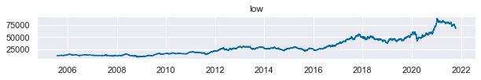

# lib
import numpy as np
import pandas as pd
import matplotlib.pyplot as plt
import seaborn as sns;sns.set()
plt.style.use('tableau-colorblind10')
# homemade
from features import tautil, sadf, trnd_scan, microstructure_features머신러닝을 이용한 트레이딩: (3) 피쳐 생성
Get Market Features
trading
feature
momentum
앞서 구한 시장 데이터를 이용하여 피쳐(feature)를 생성한다.
피쳐의 종류는 아래에서 설명한다.
시장 데이터
mtd_data = pd.read_excel('C:data/mtd_data.xlsx')
date = mtd_data.iloc[:,1].rename('Date')
open = mtd_data.iloc[:,2].rename('open')
high = mtd_data.iloc[:,3].rename('high')
low = mtd_data.iloc[:,4].rename('low')
close = mtd_data.iloc[:,5].rename('close')
volume = mtd_data.iloc[:,6].rename('volume')df = pd.DataFrame([open,high,low,close,volume]).T
df.index=datequantity_ = pd.read_csv('C:data/순매수량.csv')
quantity_ = quantity_.iloc[:-1,1:5]
quantity_.columns = ['Date','individual','foreign','institutional']
quantity_.index = quantity_['Date'].apply(lambda x: pd.to_datetime(str(x), format='%Y%m%d'))
quantity_.drop(columns='Date',inplace=True)
df = df.join(quantity_).dropna()df.to_csv("C:data/market_samsung.csv")
df| open | high | low | close | volume | individual | foreign | institutional | |
|---|---|---|---|---|---|---|---|---|
| Date | ||||||||
| 2005-07-27 | 11040 | 11180 | 10960 | 11020 | 18434300 | -2543250.0 | -1411300.0 | -1210850.0 |
| 2005-07-28 | 11040 | 11320 | 11040 | 11200 | 23659800 | -2067600.0 | 3772300.0 | -1517250.0 |
| 2005-07-29 | 11320 | 11320 | 11200 | 11300 | 17875500 | 1583050.0 | 796450.0 | -1843600.0 |
| 2005-08-01 | 11320 | 11380 | 11220 | 11380 | 16471100 | -3111550.0 | 1520100.0 | -2652100.0 |
| 2005-08-02 | 11400 | 11420 | 11240 | 11360 | 14254000 | -1567950.0 | -1895300.0 | -1310950.0 |
| ... | ... | ... | ... | ... | ... | ... | ... | ... |
| 2021-10-08 | 72300 | 72400 | 71500 | 71500 | 14043287 | 2612855.0 | 319900.0 | -2923031.0 |
| 2021-10-12 | 70700 | 70900 | 68700 | 69000 | 31001484 | 12155071.0 | -11004329.0 | -1421202.0 |
| 2021-10-13 | 68700 | 69600 | 68300 | 68800 | 24172015 | 2224620.0 | -5271845.0 | 2725596.0 |
| 2021-10-14 | 69000 | 69800 | 68800 | 69400 | 19520641 | 2011163.0 | -3787173.0 | 1696662.0 |
| 2021-10-15 | 70200 | 71000 | 70000 | 70100 | 18051612 | 822742.0 | -1376104.0 | 456288.0 |
3965 rows × 8 columns
for i in df.columns:
plt.figure(figsize=(10,1))
plt.title(i)
plt.plot(df[i])
피쳐 변수 (Feature)
- 14개의 기술적분석 지표 (괄호안 숫자는 각 지표를 구하기 위한 window)
- RSI (15)
- Willams’s R (15)
- ADX (15)
- AROON Indicator (20)
- DPO (20)
- MACD Difference (25,10,9)
- Mass Index (10, 25)
- TRIX (15)
- ATR (10)
- UI (15)
- CMF (20)
- FI (15)
- MFI (15)
- EOM SMA (15)
- VPT
- 5,10,20일 기간의 가격 수익률
- 30일 기간의 가격 변동성(표준편차)
- 개인, 기관, 외국인 별 순매수량의 5일, 20일
- 트렌드-스캐닝 백워드 t value span (20,60)
- 미시구조론 변수 각 20일 이동평균
- kyle_lambda
- amihud_lambda
- hasbrouck_lambda
- bekker_parkinson_volatility
- corwin_schultz_estimator
- kyle_lambda
windows_TA = [1]
TA = tautil.get_my_stationary_ta_windows(df_ohlcv,windows_TA).dropna()windows_mom = [5,10,20]
windows_std = [30]
moms = tautil.mom_std(df,windows_mom, windows_std)
moms = moms.iloc[:,:len(windows_mom)+len(windows_std)]quantity_ = pd.read_csv('C:data/순매수량.csv')
quantity_ = quantity_.iloc[:-1,1:5]
quantity_.columns = ['Date','individual','foreign','institutional']
quantity_.index = quantity_['Date'].apply(lambda x: pd.to_datetime(str(x), format='%Y%m%d'))
quantity_.drop(columns='Date',inplace=True)windows_ma=[5,20]
for i in quantity_.columns:
for j in windows_ma:
quantity_['{} sma_{}'.format(i,j)] = quantity_[i].rolling(j).mean()
quantity_.dropna(inplace=True)
quantity = quantity_.iloc[:,3:]spans = [20,60]
trnd_back = pd.DataFrame()
for span in spans:
trnd_back['trend_back_scan_{}'.format(span)] = trnd_scan.trend_backward_scanning(df.close, span).t_valuedollar_volume = df.volume*df.closeclose=df.close
kyle = microstructure_features.get_bar_based_kyle_lambda(close, df.volume, 20).rename('kyle_lambda')
amihud = microstructure_features.get_bar_based_amihud_lambda(close, dollar_volume, 20).rename('amihud_lambda')
hasbrouk = microstructure_features.get_bar_based_hasbrouck_lambda(close, dollar_volume,20).rename('hasbrouck_lambda')
bp_vol = microstructure_features.get_bekker_parkinson_vol(df.high,df.low,20).rename('bekker_parkinson_vol')
corsch = microstructure_features.get_corwin_schultz_estimator(df.high,df.low,20).rename('corwin_schultz_estimator')microstructure = pd.concat([kyle,amihud,hasbrouk,bp_vol,corsch],axis=1)features = TA.join([moms,quantity,trnd_back,microstructure]).dropna()
features.to_csv('C:data/features_samsung.csv')features = features['2010':'2020']
f, axs = plt.subplots(len(features.T),figsize=(10,70),gridspec_kw={'hspace': 1})
for i in range(len(features.T)):
axs[i].title.set_text(features.columns[i])
axs[i].plot(features.iloc[:,i])
f.savefig('C:image/features.png')